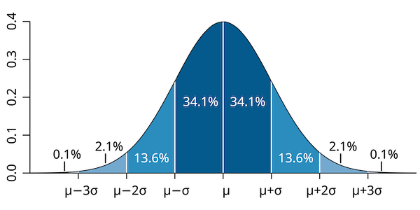
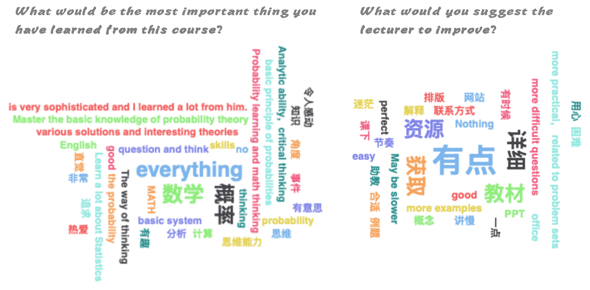

Introduction to Probability
Overview

This book is adapted from MAT921: Probability at Southwest University of Finance and Economics (RIEM). It is an introductory probability course that aims to be not boring. In this course, we try to blend conventional teaching, interesting puzzles and data-oriented practical skills.
Course Instructor’s email: gamma12@126.com. Please indicate your class and student ID when you email me.
Syllabus
Topic 1: Classical probabilities
How likely were some of your classmates born on the same day as you?
Topic 2: Data and random variables
Why is your exam score in this class a random variable?
Topic 3: Discrete distributions
How many earthquakes are likely to happen in a random year?
Topic 4: Expectation and variance
How old are you expected to live?
Topic 5: Continuous distributions
How long are you expected to wait in the queue at a restaurant?
Topic 6: Limiting theorems
Why a lottery company never loses?
Topic 7: Sampling distribution
How do I know I am taller than an average person?
Assessment
Quiz (25%). There will be an arbitrary number of in-class quizzes. The date for each quiz will be announced in advance. Each quiz will consist of 1-2 questions based on material covered in previous weeks. Every quiz is mandatory; there will be no make-up quizzes under any circumstances.
Project (25%). The goal of the projects is to encourage students to apply the knowledge learned in this course to solve practical problems. Projects are usually open-ended and may involve data analysis, simulations, or exploring real-world applications of probability. Essays that present innovative perspectives and use the data persuasively to support their conclusions will receive higher marks. Selective students may be invited to present their findings to the class.
Final exam (50%). The final exam will be a closed-book, paper-and-pencil exam scheduled for Week 17. It will not simply repeat lecture material but will assess your ability to apply the knowledge you have gained to solve novel problems. To perform well, you must have a deep understanding of the concepts and acquire some degree of problem-solving skills. The average score of the past exam is 69 with a standard deviation 15. The pass rate (>=60) is about 80%.
Class participation (5%). Additional 5 marks for class participation on top of the above. Regular attendance and constructive participation are are encouraged (though not mandatory) and will be recognized. Active engagement in class discussions or asking insightful questions will also be considered.

Lecture notes
All lecture materials will be published through this online website. You are not required to read any textbook. For students who insist on a textbook, it would be DeGroot and Schervish’s Probability and Statistics (4th edition).
It is recommended to use the textbook as a supplement not a replacement of the lecture note. For students who prefer to read the textbook. There are two key differences between this lecture note and the textbook. First, the sections are arranged differently. Second, the examples and exercises are entirely different despite the key definitions and theorems are the same.
Homework
There is no homework assignment in this course. We will do in-class exercises instead. However, problem solving is essential for learning math. You are encouraged to practice the exercises in DeGroot and Schervish’s textbook after class. But it is not mandatory.
Statistical software
Statistical software is indispensable for modern statistics. For practical consideration, it is beneficial to start learn it as early as possible. We will demonstrate how to do statistics in R, which is a widely-used open-source statistical programming language. It is highly recommended that you try it yourself while learning this course.
Students’ evaluation
If you have not decided whether to enroll in this course or not. Here are some surveys from the past students for your reference. In general, this is not an easy course especially for freshmen. We will deal with serious maths, though I will try to convey the beauty of the subject as much as possible.

Reference
- Schervish, M. J., & DeGroot, M. H. (2014). Probability and statistics. Pearson Education.
- Blitzstein, J. K., & Hwang, J. (2019). Introduction to probability. Chapman and Hall/CRC.
- Hansen, B. (2022). Probability and statistics for economists. Princeton University Press.
- Grimmett, G., & Stirzaker, D. (2020). Probability and random processes. Oxford University Press.
Online playground
Probability Playground: Interactive Probability Distributions
StatKey: Statistics Unlocking the Power of Data
Copyright ©
The content on this website is made available for online viewing by the public. Redistribution, reproduction, or any other use of the content, in whole or in part, is prohibited without prior written permission from the author.